来源：https://kkehvdiodf.feishu.cn/docx/T4nbd8JO3ohfpdxn78jcHn2Xnnh
我是天堂地狱，编号677的生财老兵，坐标河南，乐云智能科技创始人，运营出身，加入生财六年了。
记得之前机缘巧合在朋友圈看了一篇亦仁文章，果断了的加入了当时765的生财，至今为止，仍在庆幸这个“机缘巧合”。
毫不夸张的说，进入生财这六年，每年都在刷新我对赚钱这件事的底层价值观，甚至可以说，塑造了我在某一个方向的认知，对于我个人来说，其价值是巨大的。
所以平时身边朋友找我寻求项目方向上的帮助，或者说我想带某一个下属提升，我会把生财打开，告诉他：
“来，这里的精华文章，挑你觉得适合你的文章，做一个20万字左右的阅读，然后我们再聊”。
20万字，大约半本书，阅读时长30小时左右，只需要这样低的一个成本，就可能帮助一个小白打开一扇门，从而获得与比其认知高的人对话的能力，然后再通过链接，带来无限的可能，这就是我眼中的生财有术！
一篇是，抖音爆款素材低成本搬运快手做投流玩法的方法论。
另一篇是，通过一套体系和构架来支撑完善这套方法论，使之可以让没有经验的运营也可以参与进这套相对复杂的体系，发挥各个层级的特长，创造更大的价值。
一个偏向于玩法和信息分享。
一个偏向于互联网平台化项目高效管理方法的思考和借鉴。
因为两件事情是针对不同阶段类型的圈友提供思路玩法的。
不过总觉的分开来写表达不清楚，所以干脆综合起来写成一篇，搞个一文两吃，希望可以给到大家帮助。
讲到短视频平台投流打法，并且做到几千万上亿的GMV。
很多人一定是认为是运营门槛很高，需要资源丰富，要打通供应链，新奇特货源等等，总之没有普通人什么事。
确实，没有做这个项目之前，我也是这样认为的。
这套体系下，不是说不需要那些资源，而是通过发挥各个环节的能力最大化，构建一个体系，让小白运营都可以高效的完成短视频平台投流打法。
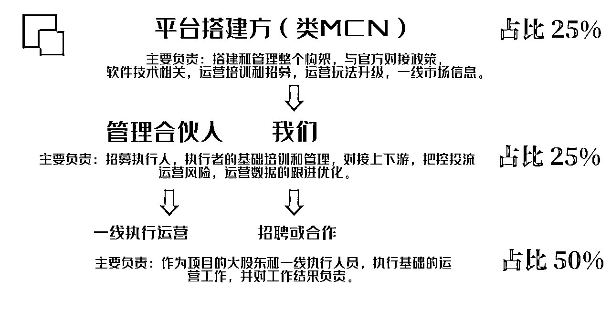
在这个构架下，平台组织作为发起方，做了一个便利于多方的平台，然后招募一批有资源的管理者，通过培养，让管理者招募N个比平台自己还操心的合伙人，在这个平台框架下做事情。
同时所有的项目（店铺），平台投资25%，分25%的利润。
当下环境下，只要按照运营流程执行。
活，自然有人好好干，并且风险也有人主动去把控，这种投资几乎是必赚的。（自己把控的项目，自己孵化，自己投资）
而平台要做的就是及时更新流程，玩法，规则和信息，协助下面更好的去执行。
对于平台方，这套构架的价值是：不用过度培养，不用房租水电，不用缴纳社保，在构架下几乎零风险获得一个占股25%投资项目。
对于管理者，这个构架的价值是：培养一批比你还操心的合伙人来做事情，投资25%，分25%的利润就是。
我们自己就是在中间管理者的位置，一年大约做3000万GMV，像我们这样的还有好几个。
整体今年的目标是2个亿。
对于一线的执行者，这个构架的价值是：只需要按照既定的流程标准，就可以成为独立店铺的大股东，起量以后的运营工作管理者自然会帮忙盯着，毕竟管理就是做这个拿25%的。
风险把控是一线执行者必备的素质，毕竟亏赚都占大头，自己是老板。
个人认为，很多项目都可以用这套构架，产生比大量招聘员工，更能放大体量，降低风险的效果。
这里为了方便大家理解，我们先讲下项目玩法的运营操作，然后再详细拆解一遍这个构架的细节，更清楚。
先简单讲下项目，这个项目是我的一个合伙人在跟的项目，现在一个月GMV大约在200-300W左右，利润率在10-15%。
整个流程不需要拍摄视频，不需要太专业的投流运营，甚至不需要有太多的运营经验，核心是依靠平台投流的成本保护机制，本着抖音验证，快手打爆的思路，抖音搬快手打信息差。
下图是我们这边的账号近一个月的数据，一共是47家店铺，大约推了600+个商品，GMV400W左右，没有什么特殊技术，核心就是找到最新的素材和产品，在每一个环节稳扎稳打。
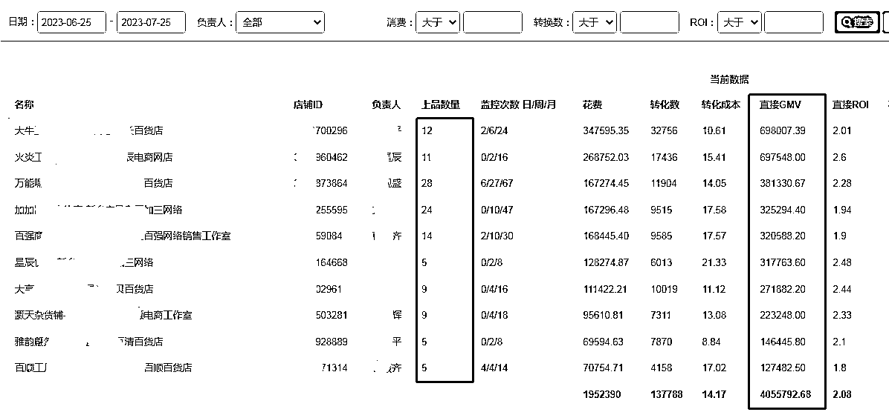
运营前期的逻辑相对来说比较简单暴力，就是搬运。
搬运抖音刚刚起量的素材（一般要求3天内，点赞大于5000的素材），多个优质素材做混剪去重，混剪出10几个视频素材，然后通投。
不起量：
换品。
起量但是跑飘了，亏钱：
由于有成本保护，以及我们设定的固定运营条件（下个章节会细讲），不会亏太多(一般一个品亏几百)，放弃，直接换品。
起量，并且赚钱：
因为是通投，基数很大，一个起量的品最少也是几千利润，好的品可能做到十几万利润，对接好厂家发货就是。（客服都是外包的后面也会讲）
所以每个品就算亏，也不会亏多少，可以上大量品来测品，一个品亏几百，但是起量一个有利润的品，就有几千或几万利润。
按照我们的执行标准，一般起量10个品，结果是1：6：3，就是1个盈利的，6个打平的（利润0-5%），3个亏钱的。
我们一般一个运营执行人跟2-3个店铺，一个店铺，一天推1个品，每个品做7-10个素材，每个素材做4个广告计划。
运营相对比较简单，但是流程较长，我们自己是拆解成阶段分工的，为了方便理解，我分为起量前和起量后两部分来讲。
这样去做，一个好的产品可能做到全国范围流量的曝光。
其核心就是快：时间就是金钱，快速找到优质素材，快速确定货源，做素材，推广，对接厂家，第一时间推广告。
个体营业执照，1000元保证金。（部分类目会高一些）
后台的基本设置，收款，绑定账号。
做好最基本的店铺装修，名字头像什么的。
这些基本的设置就不赘述了，唯一需要的可能就是找到服务商开通磁力金牛。
可以参考下我给员工做的流程，生财的朋友学习力都是很强的。
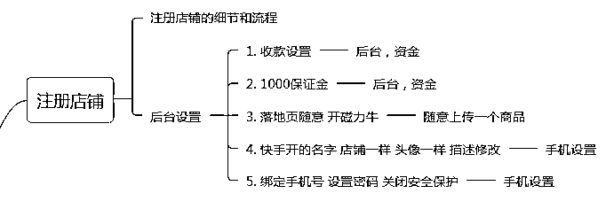
所有的电商选品都是重中之重，这个项目也不例外。
不过这个项目选品的核心不是选产品，而是选素材（视频），不是这个产品能不能爆，而是这个素材能不能爆，一切以素材落地的结果为主。
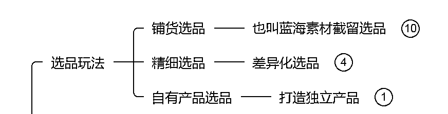
逻辑其实和做视频的阶段是一样的，只是使用在投流上而已。
就是混剪视频，复刻视频，自己做产品拍摄视频的三阶段。
但是区别是，因为投入的规模不同，成本差异很大。
比如做短视频，混剪视频，复刻视频，自己拍摄视频，三种做法成本差异不过是几百元。
但是放在这个项目就是大跨度的成本差异。
混剪视频：只需要考虑素材的质量，因为混剪成本低，测上百个品也不过几千元的广告投入。
复刻视频：复刻优质素材，就要在这个基础上，加上100套视频拍摄的成本，找人拍的话一套几百到上千不等。
自己拍摄视频：自己做产品是优势最大的玩法，因为是独立产品，短期内市场你一家，当然风险也最大。
每推一个产品，你最少要先找到厂家定制一批产品，然后自己拍摄视频，如果推不起来，就打水漂了。
所以我们做的是批量搬运混剪为主，同时摸索着复刻视频玩法。
这里讲的选品就是批量混剪的选品，也是最适合没经验人群的。
我们的基础判断标准，是抖音3天内起量的爆款潜力素材。
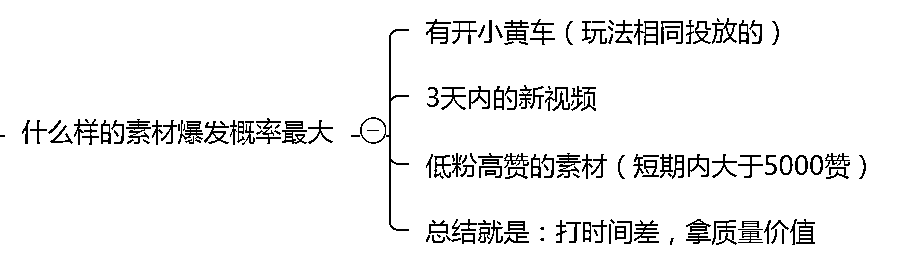
这里大家也可以理解为，抖音有大量的号再用这个方法（利用成本保护测品），在推更大量的素材，其中只有一小小部分会起量，而我们就找到这一小部分做截流，但是抖音太卷，我们把产品搬到快手去，这样既减少了大量测品的成本（抖音测过一遍了），又规避了在抖音卷的问题。
回答：大量的账号，在抖音大量的刷素材。
通常我们1-3个店铺养一个抖音账号，每天大量的刷，刷到的素材挑选最优质的供给店铺上品推流。
核心：通过养号，刷视频的方式，获取抖音平台推荐的，符合咱们标准的素材。
一般一个号连刷带买（购买产品的权重是最高的）3-7天左右就能养到能用，后面是越用越好。
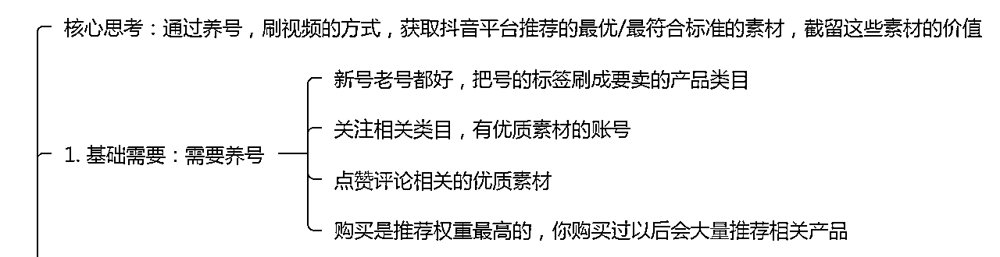
这样就可以让抖音一直给你这个号推荐你需要的素材（说白了就是给你推广告），我们会养多个这样的号，然后每个账号刷垂直的产品，然后针对垂直产品的店铺。
这里我讲一个案例应该大家就能明白了。
我前段时间去我岳父家发现他买了很多奇特的东西，比如电流点穴笔，循环扇，顶天立地衣架，海鸭蛋，等等东西，这些我一个做电商的都自愧不如，了解不到的新奇特产品，他没事就给我显摆。
他这种常刷，常买的号就是优质账号，平台的新产品投流时，系统会第一时间推荐过来，然后我们刷到以后，就可以第一时间找到货源，搬运到快手去测推广，一旦起量，做进一步优化开始做爆它。
有了这样的账号以后，选素材就简单多了，就是每天刷，刷到符合标准的素材就选出来。
还有一个方法就是抖音商城选品：
这个方法不用养号，就是利用抖音商城的推荐功能，找到符合我们要求的素材。
进入抖音商城，找到视频推荐的商品，就是有时间显示的。
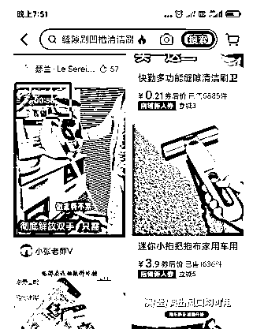
然后一直刷，直到刷到近期的素材，且点赞超高的素材，
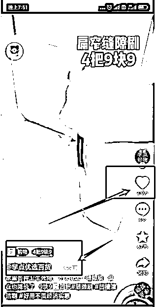
这个方法只能起到辅助作用，最好的办法还是养号。
最后是软件选品：
悠米云，EDX 这些软件都是基于这个玩法开发的选品软件，但是成本太高了，就不多讲了，（一年一万多）
用方法1.2 选品，前期够用了。
很多产品数据好可能是全网都没有货源，所以选到优质的素材以后，我们首次对接货源的目的，只要确定货源和大致价格就好。
这些素材会爆，并不是完全凭运气的，原因有很多，货源，价格，素材展示，等等。
所以货源是一个很重要的原因，好卖的产品市场上货源相对不太好找，往往是需要费一点心思找的产品的，这些产品往往后面起量的概率就大。
我们自己长期做，也会有整理厂家货源群，里面都是深度对接的厂家和中转仓服务商，发个图片进去有的话就会给你报价，尤其是中转仓服务商，市场热卖的产品一般他们都会自己出资做一些库存，长期做这个的，对市场都有预判，也方便起量的卖家卖。
不过因为是首次对接货源，不必浪费太多时间，大多数情况都是在1688或拼多多确定下有货和价格就好。
因为起量前你也拿不到太低的价格，不过有了大致价格方便定价就好。
这个是我们定价的一个计算器。
大致的逻辑就是填写价格以后，帮你计算出广告出价和极限ROI，也就是说按照这个出价，上量以后，只要ROI在这个范围内，就是盈利的。
计算的目的是让哪怕新手，都有跟进广告ROI的一个基础标准，产品起量以后不管是跑飘了，还是跑正了，一线人员都可以做一个初步的判断，同时找到上级运营跟进。
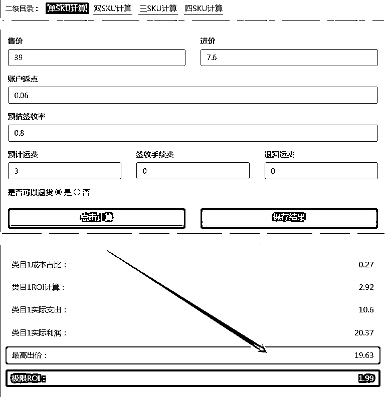
磁力金牛和千川一样，是出价的模式，谁给的价格高优先拿流量，而给的价格太高要么不赚钱，要么卖的太贵，所以出价要平衡利润和转化率。
我们产品的定价逻辑也很简单，只定9.9，19.9，29.9。
然后按照定价表计算就好，roi在2.3左右就可以。
也可以用EXL表格自己做一个:
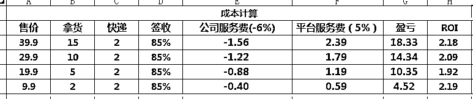
大家知道原理就好，细节的公式就不啰嗦解释了。
之后一直盯着ROI只要跑在预期值内就好。
如果起量了我们还可以通过调整出价，产品还价，多SKU，产品降级等方式拉升利润空间，所以定价的时间可以拉平不赚钱，先起量，后面再把利润拉回来。
比如多SKU，一个19.9-2个29.9，我们按照19.9毛利顶最高的出价，但是如果客户购买的是29.9的产品，我们就有利润，像那种大多一次买两个的产品，我们就会这样玩。
快手去重的逻辑是30%内容重复，所以混剪的逻辑也简单。
找到主素材后（最好的素材）然后再根据产品再找到数据相对最好的7个左右的素材。
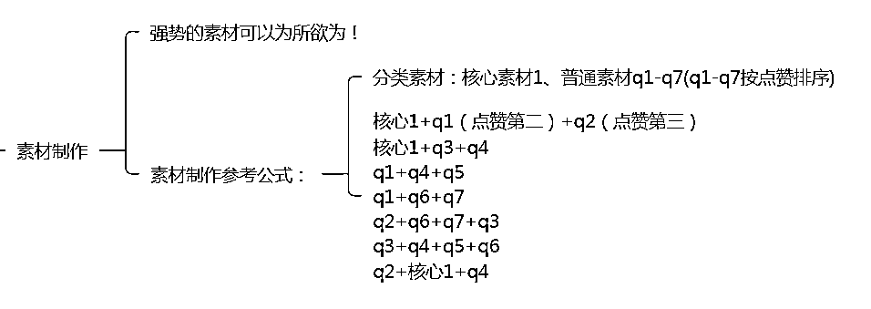
按照这个方法剪辑出多个素材。
加上颗粒和蒙版，就可以剪出多个成品素材。
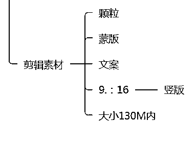
一般一个店铺一天我们只跑一个品，方便盯盘和核算，每个成品素材推4条广告计划，排除电商负反馈，不排除电商反馈，对应成本保护计划，最大转化计划，这是我们习惯的计划，其实大家理解为通投就好。
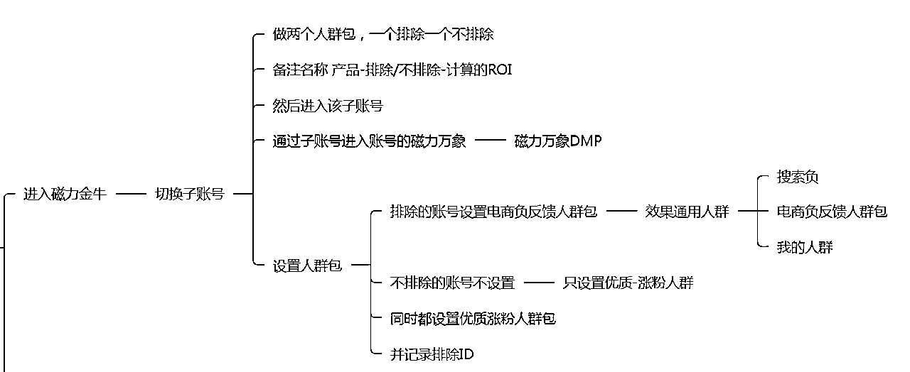
做好计划以后设置下监控，快手后台有监控设置功能，30分钟监控一次
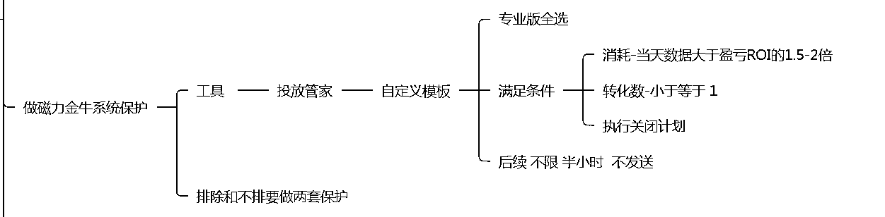
这里大家理解为，每30分钟监控一次数据，只要消耗大于设定盈亏值的2倍，且没有转化出单，就关闭该计划。
比如我的盈亏值是20，如果花了40块钱，没有出一单，自动关闭计划。
（这里我们自己有做软件监控，一分钟监控一次，比后台的要好用一些。）
每条广告推24-48小时，时间到的，没起量的，触发条件亏钱的，这些全部素材淘汰，没起量=没广告费=没成本。
就这样一个人2-3个店铺，一个店铺一个月30个商品，一个商品7个素材，一个素材4调条计划=1680个计划。
用批量化，低成本能做到的最好的素材，去推1680个计划，只要一条计划起量，一般都是一天几百-几千单的体量。
这是起量前流程的最后一个阶段，一般来说也是一线运营执行人流程内最后的工作，因为之前有计算好ROI的值，所以只要盯紧计划的ROI就好。
（这里如果是作为大股东的一线执行人真的很用心，经常半夜两点打电话沟通起量的素材后面怎么做，如果是员工，谁管你亏赚）
起量的素材，如果跑飘了（没有触发条件但是ROI很低），一般一个品会亏个几十块钱，最多亏个小几百元。
那就关掉淘汰。
如果，确定盈亏合理有利润，下面开始正式运营。
当然后续运营的判断会更模糊一些，下面就不能标准化了，要根据产品，价格，经验，平台同行状况，来判断某一些跑票的的产品要不要顶一顶，那些已计划是可以再救一下的。
以上所有的环节讲起来麻烦但是其实都是标准化流程的，也是整个操作的第一阶段，你找来任何一个小白，只要用心，简单学习以后一般3天都可以上手操作，7天就可以熟练，如果有经验，一天就OK。
起量后优化分为利润优化，素材调整，出价调整来提高销量和利润空间。
起量后的核心是利润优化，因为之前起量，我们并不是刻意要求利润，而起量之后，有很多空间可以把利润拉回来，那怕有些产品起量以后跑飘了，也是有机会通过利润优化拉回的。
百分之99的产品，起量以后都有10-25%的优惠空间，只要去一家一家谈，就一定有。
产品上量了，产品价格可以谈10-25%，物流价格可以谈0.5-1元，同时我们还可以统一定一批货发到咱们义乌的中转仓，发全国最低的物流价格。
总之现在的市场环境，只要你有量，价格都能聊。
很多产品额外赠送的东西，不影响体验的话可以去掉，比如电池，比如外包装盒子， 一单省个2毛三毛不成问题，要知道很多起量的产品一天可以走万单，几毛瞬间变几千。
如果量达到一定程度且持续，可以直接沟通厂家定制规格，250ML 改成210ML，大瓶的改成小瓶，好材质降低一下材质，这些都是工厂基本操作，你只需要报价，工厂就会给你方案。
之所以这样说是因为很多情况下，调价量就会死，因为大概率同时在跑不是你一个，一般我们调价只做1-2次，然后除非是其他地方没有优化的空间，以及这个价格确实不赚钱的情况才会降低出价。
还有一种特殊情况，就是我们卖的产品市场独一份，就不怕，慢慢压缩利润空间试试。
当然，如果产品利润足够高，也可以通过提高出价的方式来进一步拉升流量的操作的。
客服环节我们都是外包，不起量的店铺没有什么客服，而起量的店铺一个人又忙不过来，专门客服岗位的没价值，几百块钱外包就好。
我们店铺量比较多，所以自己独立出一个团队做客服外包，内部承包了客服工作，这样运营可以可以专心做自己的事情。
义乌有很多代发服务商，有仓库有场地，市场热卖品有囤货，甚至有些老板合作的好，还能互相调货，甚至会给账期。
同时代发服务商自己也有自己的工厂资源，也可以协助找货，有时间我们需要什么产品直接发图片，他们会帮忙找货。
我们自己整理了工厂和代发服务商群，也是为了方便找货源，这个行业的特殊性，起量以后一定是找到全国最低价的货源，这样才有投放优势。
选品类的软件：这个行业说白了就是比谁先刷到优质素材，所以像EDX，优米云这类软件卖的超级贵。
我们自己在尝试开发一个自动刷抖音，并记录达标素材的软件，如果有开发业务的圈友可联系我，wxx712159，付费，合作开发都可以。
批量搭建计划和监控数据系统：我们自己也有开发批量搭建计划的系统，提高运营的效率，不过暂时只能系统内部的店铺使用，最近，包括整套体系，我们也在摸索如何对外使用。
不过没有这套系统并不影响这个项目操作，只是效率问题。
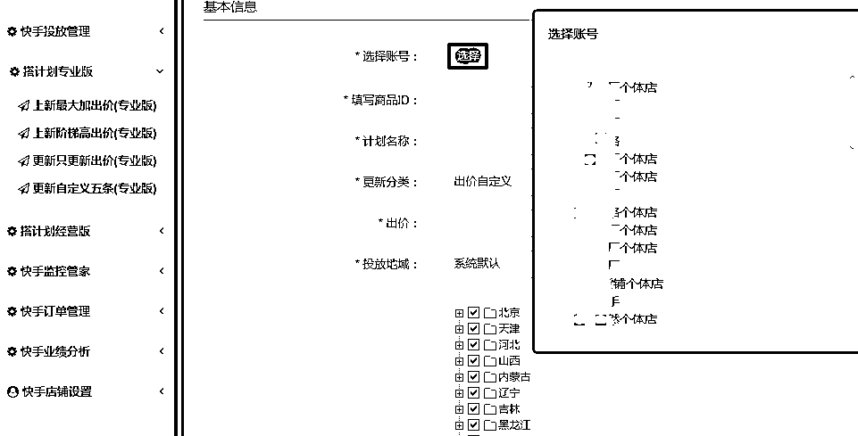
这样一套体系构架，个人认为，是互联网项目平台化高效管理方法的思考和借鉴，可以让没有经验的运营也可以参与进这套相对复杂的体系，发挥各个层级的特长，创造更大的价值。
刚才我给这套体系做了简单的介绍，下面我详细分享下我对这个构架的看法。
整体构架分为三方，并各司其责，各占分红。
头部平台方投资25%，分红25%。
中间管理组，投资25%，分红25%。
下层执行方，投资50%，分红50%。
第一时间获取一应的官方政策，返点，加白，政策收紧口，等官方资源。
很多小体量玩家或许对接不上官方的优势政策，以及一些官方调整后第一时间的信息。
比如今年调整部分类目收紧需要资质，我们的平台方就可以通知提前做好资质，授权给下面运营使用。
比如罚款收严的红线区域和规则，第一时间通知，不要踩红线。
一些体系内玩法的资讯信息的共享：
就好比之前这套玩法是跑抖音的，抖音卷起来以后大家第一时间撤到快手来玩。
成立软件团队，提供辅助的ERP系统，中控数据系统等，长期运营起来会有相当的数据积累，这些数据对于运营，管理来说，相当有价值。
比如去年夏天爆量的空调扇数据，对应到今年刷到的类似产品优质素材，运营就可以提前判断起量的可能性。
或者某些产品，跑起来量不错，但是内部大盘长期表现不好，运营就可以判断不用刻意去顶，提前放弃。
整理好相对确定性的运营流程，（这里注意是流程而不是简单的知识）确保管理组以及执行组的人员在运营执行时可以有效执行。
这篇文章分享的运营流程，都是这个框架下，长期磨合的产生的。
长期的运营累积，对接了数千个厂家，数百个仓储中间商（每个中间商都对接了N个厂家货源，有自己在义乌的发货仓库，可以协助全国的客货囤货，发货，链接货源，关系好的还可以给账期），基本上出了新品，都可以第一时间找到。
把发货，客服都外包出去以后，执行者就更省心了。
定期培训，跟踪管理结构，提供软件技术支持，以上这些都是平台来整合对接的，因为体量大谈起来方便，然后大家共同使用这套体系。
中间管理层方面，也是我们团队的位置，要做的事情。
每个中间管理层，都要拉起来，并管理好自己的队伍，这样在不用太多的投资，和太大的风险，就可以在这套体系下，相对轻松的拿到投资分红。
管理者需要具备相当的运营经验和管理经验，从基础工作流程，到起量后的操作标准，都要熟练，然后培养出一批靠谱的，有经验的，执行人队伍。
所有的信息沟通都是由管理者上下衔接的，管理者就是衔接器。执行者一应的问题，甚至对下违规的处罚，一应由管理者承担，自己队伍自己带，带不好就要对大家负责。
这也是管理者的基础工作之一。
管理者的核心工作，作为下面的执行者，运营知识不足是常态。
作为上家平台，只会制定好高效通用的流程和规则，所以而作为管理者，把控投流过程中的风险就是本职责任了，要对投流运营相当的熟悉。
做好跟进起量的品，做好运营把控，指导执行者广告出价，更换素材，降低产品成本，等等的后续运营动作。
高效的选品和及时的风险监控是一线执行者必备的素质，毕竟亏赚都占大头，自己是老板。
虽然我们叫下层执行者，但他们才是这个体系下的个体大股东，也是一线的工作人员，同时也是执行力的核心。
玩法的核心很简单，就是大量的找到抖音起量的产品，用固定的流程搬运到快手，只要量大，把控好风险，玩法不卷，就一定会会赚钱。
（可以理解每次选品，投放，测品，都是一次牌局，有效的运营流程可以保证盈利比是超过1的，大量的基础工作，就可以保证大量的盈利，而大量基础工作来源于一线执行的辛苦努力）
根据执行者的能力，及时跟进监控起量以后的数据，如果超过能力范围，需要及时对接直属的管理者，讨论和执行对应方案。
作为一线执行者，和大股东，就会对结果非常的负债。（因为亏也会是亏得最多的人）
只要具备基础的学习能力，和优秀的执行能力，按照流程，可以大量产出优质的素材。
大量的优质素材自然可以测出起量的产品，运交由营管理者来协助跟进这些产品，通过平台搭建的整套服务体系，把效果放到最大，然后盈利以后大家按照比例分红。
大家有没有发现，在这个体系下，主理方，也就是平台通过这个框架，招募了大量的管理者，执行者，同时不用付出工资，社保，办公场地等成本，而风险把控的部分也会交还给一线的执行者，硬生生把重资产的二类电商投流做成轻资产的合作模式。
这也就是我这篇文章想分享的第二点。
好了，因为合在一起写，又8000字了，今天的分享就到这里。
最近或许会比较有时间，我会尝试在生财分享更内容。
也希望和更多生财的朋友交流。